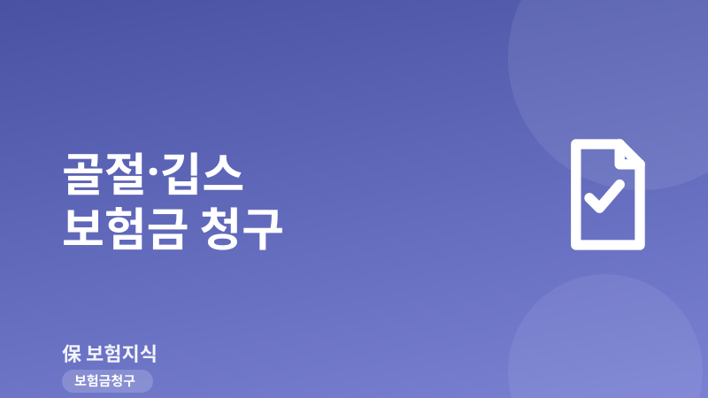
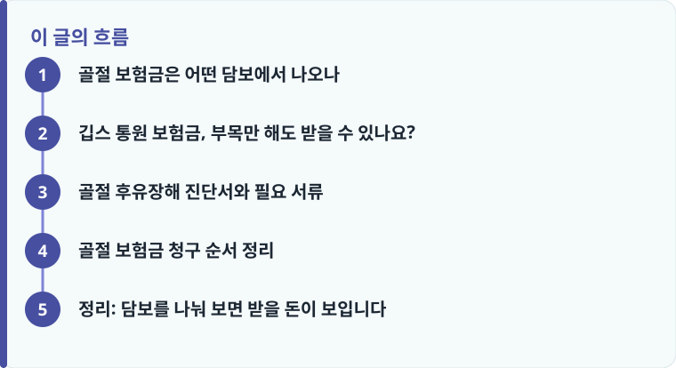

골절은 골절진단비 특약, 상해수술비, 실손 통원·입원비가 각각 별도로 걸리므로 담보를 하나씩 확인해 중복 청구합니다.
깁스(부목) 고정만 해도 통원·처치로 청구가 가능하지만, 골절진단비는 X선·CT 등 영상 진단서가 있어야 지급됩니다.
골절이라도 '우연·급격·외래'라는 상해 3요건을 충족하지 못하면 상해 담보가 거절될 수 있습니다.
골절 보험금은 어떤 담보에서 나오나
골절 한 번에 나올 수 있는 보험금은 생각보다 여러 갈래입니다. 대표적으로 정액 담보인 '골절진단비 특약'은 뼈가 부러진 사실이 진단되면 부위와 관계없이 정해진 금액(보통 20만~50만 원)을 한 번 지급합니다. 여기에 수술을 하면 상해수술비가 별도로 나오고, 병원비 자체는 실손보험의 입원·통원 담보로 따로 청구합니다. 하나의 사고라도 담보가 다르면 각각 청구할 수 있다는 점이 중요합니다.
즉 깁스만 하고 끝난 단순 골절이라도 골절진단비 정액과 실손 통원비를 함께 받을 수 있고, 핀을 박는 관혈적 수술을 했다면 수술비까지 더해집니다. 실손과 정액 담보의 역할이 헷갈린다면 입원·수술·통원 보험금을 나눠서 청구하는 방법을 먼저 보면 구조가 정리됩니다.
깁스 통원 보험금, 부목만 해도 받을 수 있나요?
결론부터 말하면 수술을 하지 않고 깁스나 부목으로 고정만 해도 청구가 됩니다. 골절 정복·고정 자체가 치료 행위이기 때문에, 병원에서 깁스를 대고 통원 치료를 이어가면 실손 통원 담보로 진료비를 청구할 수 있습니다. 4세대 실손 기준 통원 자기부담금은 급여 부분 최소 1만 원, 비급여 부분 최소 3만 원 또는 30% 중 큰 금액이 공제되므로, 소액 통원은 실제 지급액이 크지 않을 수 있습니다.
반면 골절진단비 정액 특약은 자기부담금 공제 없이 정해진 금액이 그대로 나오므로, 깁스만 한 단순 골절에서는 오히려 정액 진단비가 체감상 더 큰 도움이 됩니다. 다만 지급의 핵심은 '골절 진단이 영상으로 확인되는가'입니다. 단순 타박상이나 염좌(삔 것)는 골절진단비 대상이 아니므로, X선·CT 판독 결과가 진단서에 명시돼야 합니다.

골절 후유장해 진단서와 필요 서류
대부분의 골절은 회복 후 후유증이 남지 않지만, 관절 운동 범위 제한이나 뼈가 붙지 않는 부정유합처럼 장해가 남으면 후유장해 담보를 청구할 수 있습니다. 이때는 치료가 끝나 증상이 고정된 뒤 발급한 골절 후유장해 진단서가 필요하며, 지급률(예: 한 관절의 장해 5~20%)에 가입금액을 곱해 보험금이 산정됩니다. 장해 판정은 치료 종결 시점을 기준으로 하므로 서둘러 청구하기보다 경과를 지켜본 뒤 진행하는 것이 유리합니다.
기본 서류는 골절 부위와 상병코드가 적힌 진단서, 통원·입원 확인서, 진료비 영수증과 세부내역서이고, 사고 경위를 확인할 수 있는 자료가 함께 요구되는 경우도 많습니다. 담보별로 챙길 서류가 다르므로 보험금 청구 서류를 빠짐없이 챙기는 체크리스트를 참고해 한 번에 접수하면 반려를 줄일 수 있습니다. 서류 종류가 더 궁금하면 보험금 청구에 필요한 서류 총정리도 함께 보세요.
작성·검수 기준
이 글은 특정 보험사 상품을 권유하기 위한 것이 아니라, 골절 사고에서 걸리는 담보 구조와 청구 순서를 이해하도록 돕기 위해 작성했습니다. 골절진단비 금액, 자기부담금, 후유장해 지급률은 가입 시점의 약관과 상품에 따라 달라질 수 있습니다.
정확한 보장 범위는 본인 증권의 약관과 상품설명서, 그리고 보험금 청구 절차 전체 흐름을 함께 확인하는 것이 가장 정확합니다.
골절 보험금 청구 순서 정리
골절은 상해 담보에서 나오는데, 약관은 상해를 '우연하고 급격한 외래의 사고'로 정의합니다. 넘어지거나 부딪혀 부러진 경우는 요건을 충족하지만, 골다공증처럼 질병으로 뼈가 약해져 저절로 생긴 골절은 외래성이 인정되지 않아 상해 담보가 거절될 수 있습니다. 아래 순서로 정리하면 놓치는 담보를 줄일 수 있습니다.
- 진단서에 골절 상병코드와 영상 판독 결과가 있는지 확인합니다.
- 골절진단비 정액 특약 가입 여부와 지급 금액을 확인합니다.
- 수술을 했다면 상해수술비 담보를 별도로 청구합니다.
- 실손 입원·통원 담보로 병원비를 자기부담금 공제 후 청구합니다.
- 장해가 남았다면 증상 고정 후 후유장해 진단서로 추가 청구합니다.
정리: 담보를 나눠 보면 받을 돈이 보입니다
골절 보험금은 '얼마 나오나'가 아니라 '어떤 담보에서 각각 얼마가 나오나'로 접근해야 합니다. 정액 골절진단비, 상해수술비, 실손 통원·입원비, 그리고 후유장해까지 한 사고에 여러 담보가 걸리므로 하나씩 확인해 중복 청구하는 것이 핵심입니다. 상해 3요건과 영상 진단만 갖추면 깁스만 한 골절도 충분히 청구할 수 있습니다. 거절 사유가 궁금하다면 실제로 보험금이 거절된 사례와 대처법을 함께 읽어 보세요.
다른 보험 정보 글이 궁금하다면 보험지식 블로그에서 이어 읽어 보세요. 가입 전에는 반드시 약관과 상품설명서를 확인하는 것이 가장 안전한 방법입니다.